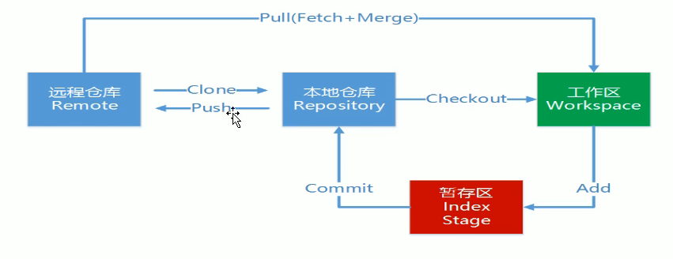

这篇关于github与git的介绍🐒。
- github: 存放代码的远程仓库。
- git： 管理github的工具。
github基本概念
仓库 （Repository）
- 存放你项目的地方，每个项目都存放一个仓库中
收藏(Star)
- 收藏项目的人数
复制和克隆(Fork)
- 复制别人的仓库到我的账号下创建一个新仓库
- 独立存在的
发起请求(Pull Request)
- 基于fork的，你在别人的项目上做了改进、行把他合并这时候可以发请求
- 发起人觉得不错、这是可以合并
关注(Watch)
- 关注项目，当项目更新时可以接收到通知
事物卡片(Issue)
- 发现代码BUG,但是目前没有成型代码，需要讨论时用
Github主页
- 用户动态和用户动态
仓库主页
- 项目代码
- 版本
- 收藏/关注/fork情况
个人主页
个人信息
项目等
2 注册
注册
验证邮箱(收不到邮箱上设置白名单)
git
- 分布式版本控制工具
工作流程
- 从远程仓库中克隆Git资源作为本地仓库
- 从本地仓库中checkout代码然后惊醒代码修改
- 在提交代码之前将代码提交到暂存区
- 提交修改 -> 提交到本地仓库 ，本地仓库中修改的个历史版本
- 修改完成之后，需要和团队共享代码时，可以push到远程仓库

基本信息设置
1 | // 1. 设置用户名 |
基本命令
1 | // 查看配置 |
将项目提交到github
1 | # 1 创建仓库 |